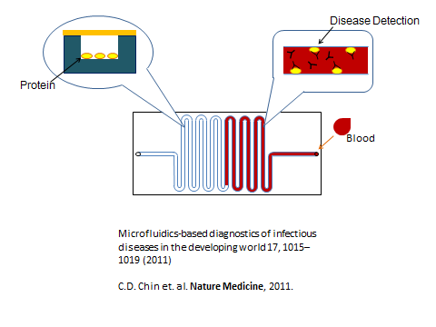
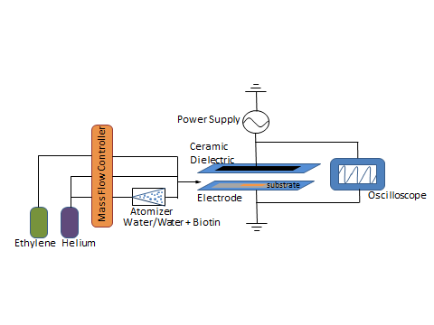

水霧電漿用於蛋白質奈米薄膜之生物晶片製程
Using aerosol-assisted atmospheric plasma to rapidly immobilize protein onto bio-chip substrate
背景
介電質放電(Dielectric Barrier Discharge簡稱DBD)所產生的常壓電漿，可以在一大氣壓下，使輸入的氣體在電漿中離子化，藉此產生離子或分子之間的分離或耦合反應。最新的研究顯示電漿可以替代傳統的化學反應將生物分子固定在晶片表面上，這項技術可用於藥物傳輸、食品表面抗菌膜之形成與生物晶片的製程等。生物晶片製程的對象有DNA序列、胜肽(peptide)與蛋白質，製作的方法會因為對象不同而不同，像DNA序列與胜肽(peptide)利用光罩蝕刻、電化學等方法製作。 固定蛋白質的傳統方法是先在表面上利用化學溶劑製作出一些官能基，再使用共價鍵將蛋白質固定在晶片表面，而這種方法的缺點是很耗時且利用過多的溶劑才能夠將蛋白質固定完成。 本研究和吳宗信老師實驗室合作，主要使用氦氣來形成電漿，在高電壓下，氦氣游離出電子形成電漿；同時輸入的化合物，則是受到加速電子的撞擊，游離出電子產生化學離子，離子受到電場的關係移動到電極表面與晶片表面， 而在關閉電場後，離子在晶片表面進行耦合反應形成碳氫聚合物，並且在晶片表面上快速合成聚合物與蛋白質連結，這種方式可以有效減少使用化學溶劑，快速固定蛋白質，同時保有蛋白質的活性。

Figure 1：微流道檢測疾病示意圖
目的
本研究使用電漿游離的方式，在不使用化學溶劑的情況下，快速將蛋白質固定在晶片表面上，並探討不同頻率與電壓DBD下對於蛋白質的固定效果與活性，未來希望使用DBD的方法將蛋白質固定在晶片表面上，藉由這種快速的方法，大量製作微流道，則可普遍用於診所疾病檢測，使醫療資源更有效率的使用，此外用於疾病檢測的微流道具有可攜帶性，可讓醫師帶到偏遠地區使用。
方法
將氦氣、乙烯、與包有蛋白質的水滴粒子混合送入DBD中，利用高電壓電離氦氣產生電漿，透過電漿中游離電子的撞擊使乙烯與水分子斷鍵聚合成帶有OH基的長碳鏈，再在晶片表面上沉積，而受保護的蛋白質因為分子間氫鍵的關係與乙烯形成的長碳鏈鍵結，達到將蛋白質固定在晶片表面上的需求。 實驗過程中利用傅立葉轉換紅外線光譜(Fourier transform infrared spectroscopy,FTIR)與X光電子能譜(X-ray photoelectron spectroscopy,XPS)去分析晶片表面上所沉積的化合物，再利用酶聯免疫吸附試驗(enzyme-linked immunosorbent assay,ELISA)做生物分子活性的檢測，未來則可期望將此方法利用在不同材質的晶片表面或是將不同性質的生物分子固定在晶片表面上，進行更廣泛的生物醫學應用。

Figure 2：DBD實驗架構圖。輸入物He、乙烯與水分子同時輸入到介電質之間進行反應，將蛋白質固定在晶片表面上。
參考文獻